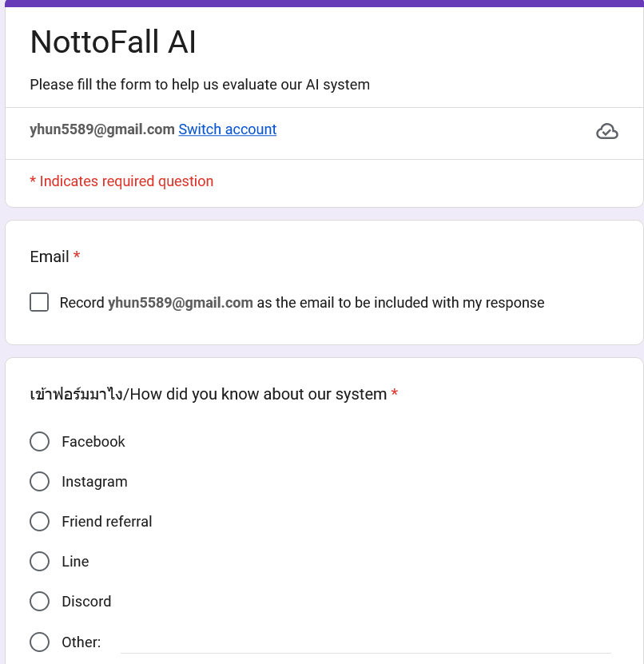
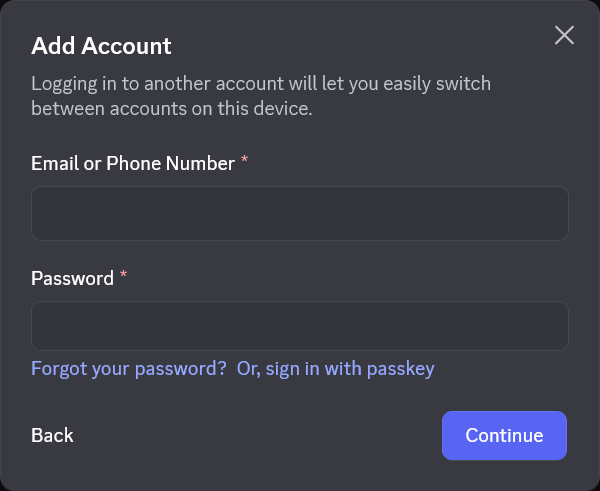
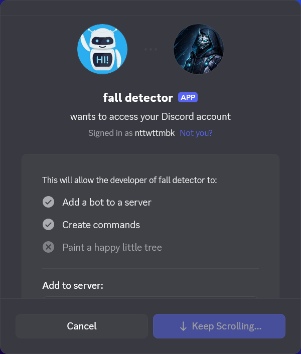
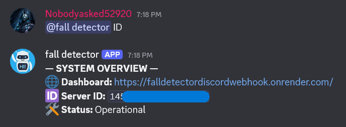
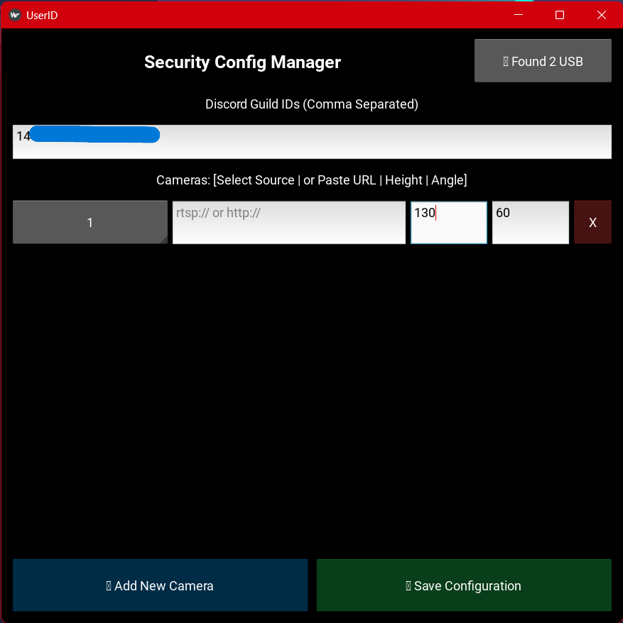
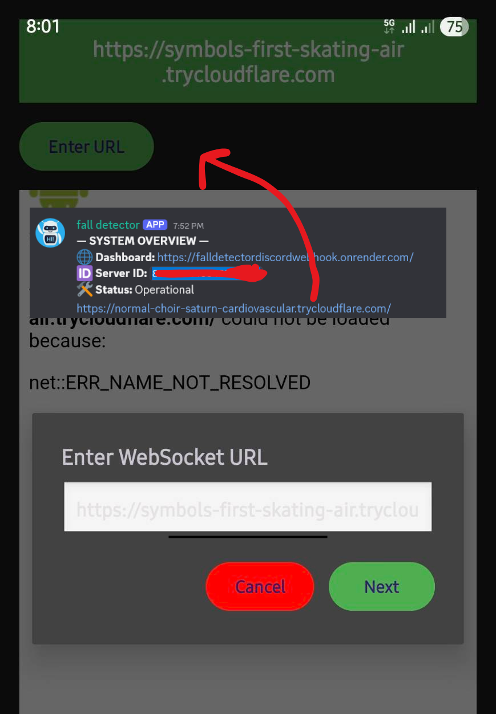

Deployment Protocol
Follow the technical walkthrough below to initialize the FallGuard environment.
Environment Setup
Download .exe and .apk file by filling the form
ลงชื่อเข้าใช้เพื่อขอรับไฟล์

Create account discord
create discord account and server for alert notifications and bot |you can invite as many people as you want|
สร้าง account discord และ server discord

import discord bot
invite Discord bot to server เพราะรับการแจ้งเตือน
invite Discord bot to server for alert notifications. And detection server link which can be used in your android app
A unique temporary ID will be generated for your server everytime the detector app is started

Request server ID
tag bot และพิมพ์ว่า ID save ID ไว้เพื่อใช้ต่อไป
Tag the bot and type "ID" to receive your unique server ID. Save this ID for the next steps.

Unzip the downloaded file and camera setting
เปิดไฟล์ชื่อ cam_selector.exe. ไฟกล้องจะกะพริบเป็นเวลาหนึ่งก่อน application จะติด จากนั้น นำ ID ที่ได้ไปใส่ใน แถบ ID จากนั้นเลือกกล้องที่ต้องการให้ app เข้าถึง ใส่ URL เฉพาะกล้องวงจรปิดที่เชื่อมต่อ wifi กล้องปกติสามารถเลือกได้เลยโดยไม่ต้องมี URL
หลังจากนั้นเลือกความสูงของกล้องเทียบกับพืน และองศาโดย 90 องศาแทนกล้องตั้งตรง(เหมือนมองหน้าผู้ใช้งานตรงๆ) ในขณะที่ 0 องศาแทนกล้อง มองตรงจากบนลงล่าง(vertical)
open file cam_selector.exe the camera light might blink before the application loads after that pass the server ID from the discord bot then select the camera. Incase of security cam pass only the URL of the security camera * USB or other type of cameras can be selected directly
after that select the height of the camera from the ground and the angle of the camera where 90 degree is for camera looking straight at the user while 0 degree is for camera looking straight down(vertical)

กด RUN mulcam_server.exe
หลังจากตั้งค่าเสร็จแล้ว ให้กด RUN mulcam_server.exe * อาจใช้เวลานาน เพื่อเริ่มการทำงานของเซิร์ฟเวอร์ รอ url ส่งมาใน Discord server และนำ url ไปใส่ใน app บนมือถือ
After completing the setup, click RUN on mulcam_server.exe *This may take some time* to start the server. Wait for the URL to be sent in the Discord server and then paste it into the mobile app.
